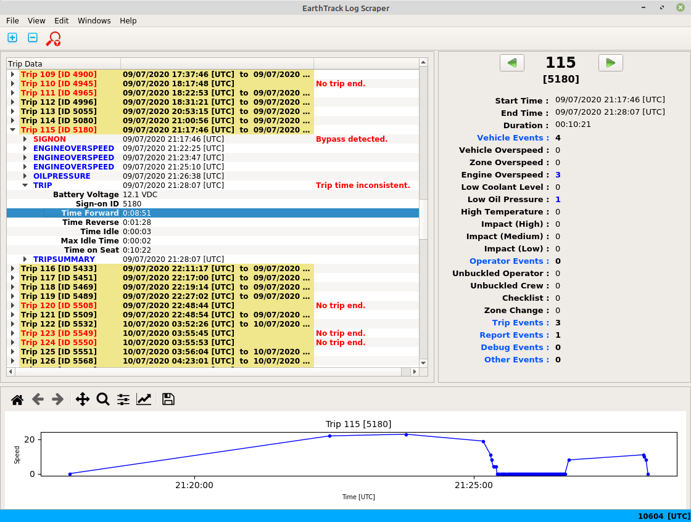

The trip headers are highlighted to make the start of trips easier to find when all trips are expanded. Events are normally highlighted in a blue (configurable) font, and event data is normally shown in black font. The application does some simple checking of event data looking for edge conditions or potentially bad data, and highlights this data. Where some event data has been highlighted the corresponding event and associated trip are highlighted in the same colour. Note that hidden events to no contribute to the alert highlighting of the trip to which they belong.

In the example above a zero duration event has been detected for a zone overspeed event, which may or may not be an error. The trip and event are also highlighted so that the presence of the alert is visible even if the trip tree is collapsed.
The application also performs some checking at the trip and event level, e.g. checking that trips are ended, or that consecutive events have increasing time. For these types of alerts additional alert comments are added to an extra column in the Trip Data pane as illustrated in the figure below.
Where alert comments apply to hidden events the highlighing of the assoicated trip is not performed.aion
In general alert comments are a good indication that something is awry with the log file or the controller itself.